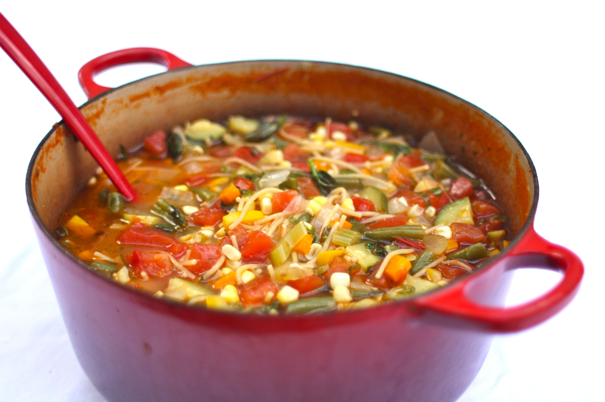

Minestrone

Description
Minestrone is a hearty Italian soup traditionally made with beans, pasta, and lots of vegetables. Enjoy the slow-cooked flavor in just about 30 minutes.
Ingredients
- 1 tablespoon olive oil
- 1 cup diced onion
- 3/4 cup diced carrot
- 3/4 cup sliced celery
- 1 teaspoon minced garlic
- 1 1/2 teaspoons minced fresh rosemary
- 1 (15 ounce) can tomato sauce
- 1 (15 ounce) can cannelleni beans, rinsed and drained
- 2 1/2 cups water
- 2 cups chicken broth
- 1 cup diced zucchini
- 1/2 cup dry ditalini pasta
- 1/4 teaspoon black pepper
- 1/4 cup chopped fresh italian parsley
- 1 tablespoon shredded parmesan cheese
Steps
- Heat oil in a large saucepan over medium-high heat. Sauté onion, carrot, celery, garlic, and rosemary until vegetables begin to soften, about 5 minutes.
- Stir in tomato sauce, beans, water, broth, zucchini, pasta, and pepper; bring to a simmer. Cook, uncovered and stirring occasionally, until pasta is tender, 10 minutes. Stir in parsley. Serve topped with Parmesan and additional parsley if desired.
Home